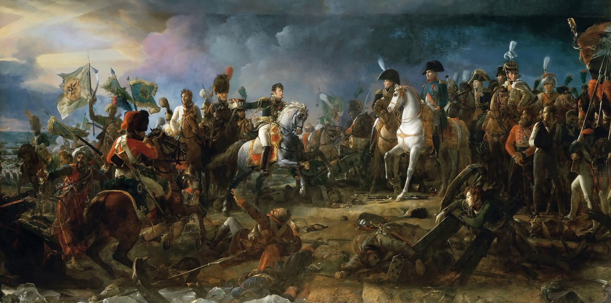
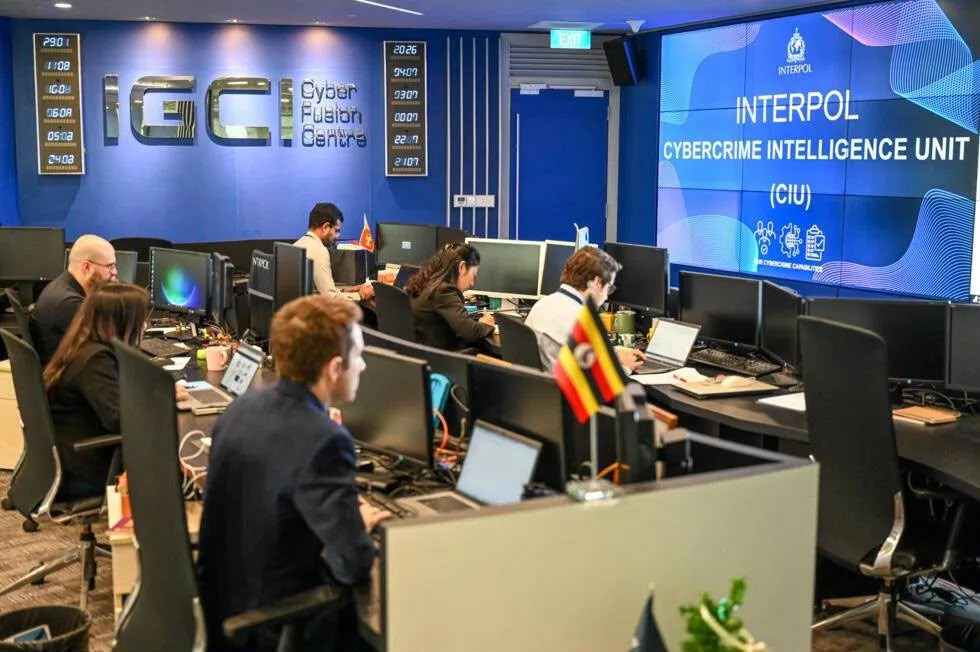
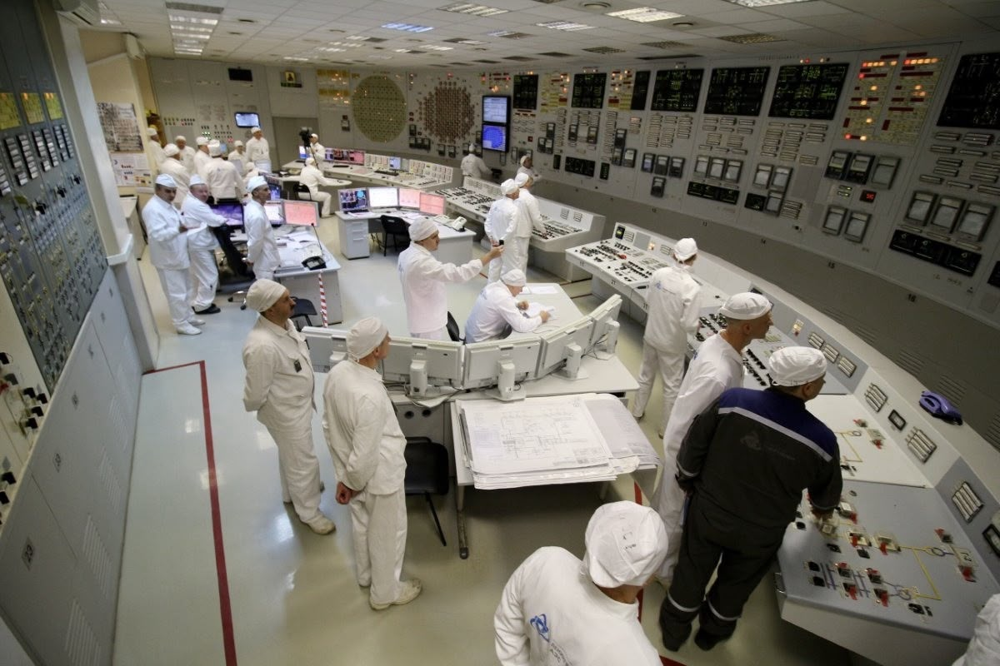
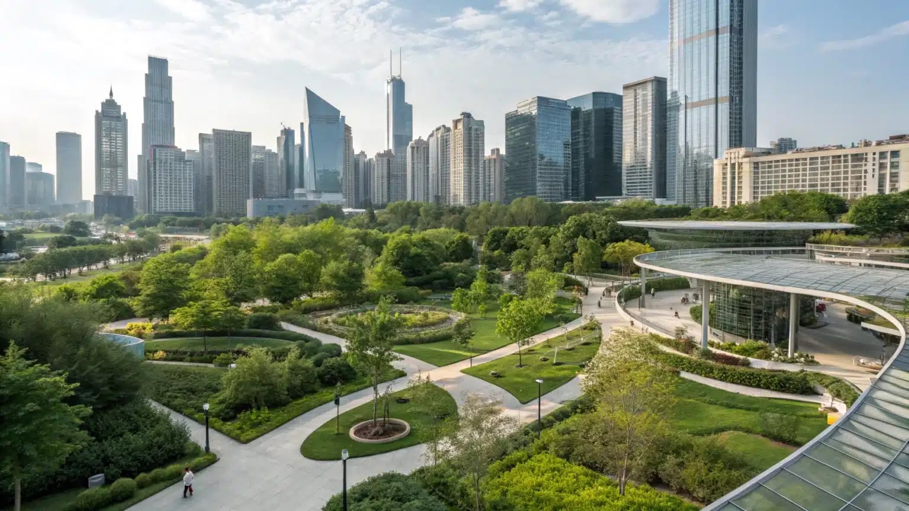
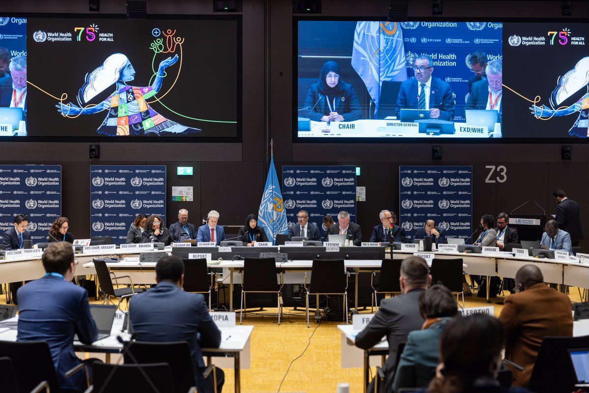
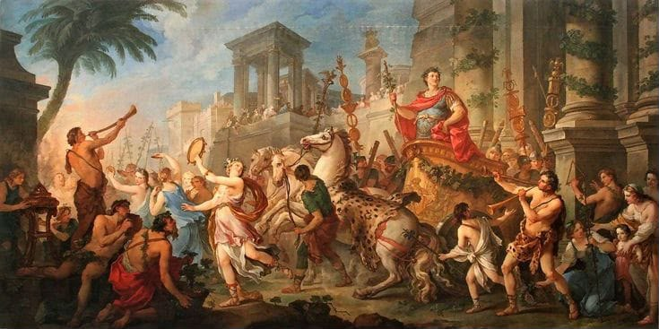

Committees
YEALMUN 2026 Committees & Agendas

Joint Crisis Committee Advanced
Europe stands at a turning point as the Napoleonic Wars reshape the balance of power across the continent. Delegates, divided between opposing cabinets, must respond to rapidly evolving military, political, and diplomatic crises. With an open agenda, every decision has the potential to alter the course of history.
Grammy Awards Intermediate
Step into the world of music's most prestigious awards ceremony, where artistic excellence, industry influence, and cultural impact take center stage. Delegates will represent artists, producers, executives, and other key stakeholders as they navigate the challenges of recognition, controversy, and the ever-evolving global music industry. With an open agenda, the direction of the committee will be determined entirely by the delegates' creativity and diplomacy.

INTERPOL – International Criminal Police Organization Beginner
As artificial intelligence rapidly transforms both society and criminal activity, international law enforcement faces unprecedented challenges. Delegates will collaborate to develop effective strategies for combating cybercrime, dismantling AI-assisted criminal organizations, strengthening international cooperation, and ensuring that technological innovation is not exploited for illicit purposes.

IAEA – International Atomic Energy Agency Beginner
Armed conflicts have raised serious concerns regarding the vulnerability of civilian nuclear facilities. Delegates will discuss international mechanisms to safeguard nuclear infrastructure, prevent radiological disasters, and reinforce global nuclear security while balancing humanitarian, legal, and geopolitical considerations.

UN-HABITAT – United Nations Human Settlements Programme Beginner
Rapid urbanization and climate change have intensified the Urban Heat Island effect, placing millions at greater environmental and public health risk. Delegates will explore sustainable urban planning strategies, innovative infrastructure, and climate adaptation policies to build cities that are more resilient, inclusive, and environmentally sustainable.

WHO – World Health Organization Beginner
The World Health Organization is the leading international body responsible for coordinating global public health efforts. As emerging infectious diseases continue to pose significant threats, delegates will examine the risks associated with Hantavirus while developing strategies to strengthen pandemic preparedness, improve international cooperation, and enhance global health security.
Second International Intermediate
Representing one of history's most influential socialist organizations, delegates will debate the ideological, economic, and political issues that shaped the international labor movement during the late nineteenth and early twentieth centuries. With an open agenda, delegates will determine the course of discussion through historical diplomacy and political negotiation.

Roman Senate Advanced
The Roman Republic faces one of the most defining moments in its history as Julius Caesar's march across the Rubicon plunges Rome into civil war. Senators must navigate shifting alliances, political rivalries, and military conflict while determining the future of the Republic. Every speech, alliance, and vote may change the fate of Rome itself.
Ad-Hoc Advanced
The Ad-Hoc Committee offers delegates a unique and unpredictable crisis experience unlike any other. The agenda will remain undisclosed until the committee begins, requiring participants to think critically, adapt quickly, and respond effectively to unforeseen developments. Success will depend on creativity, flexibility, and decisive leadership under pressure.